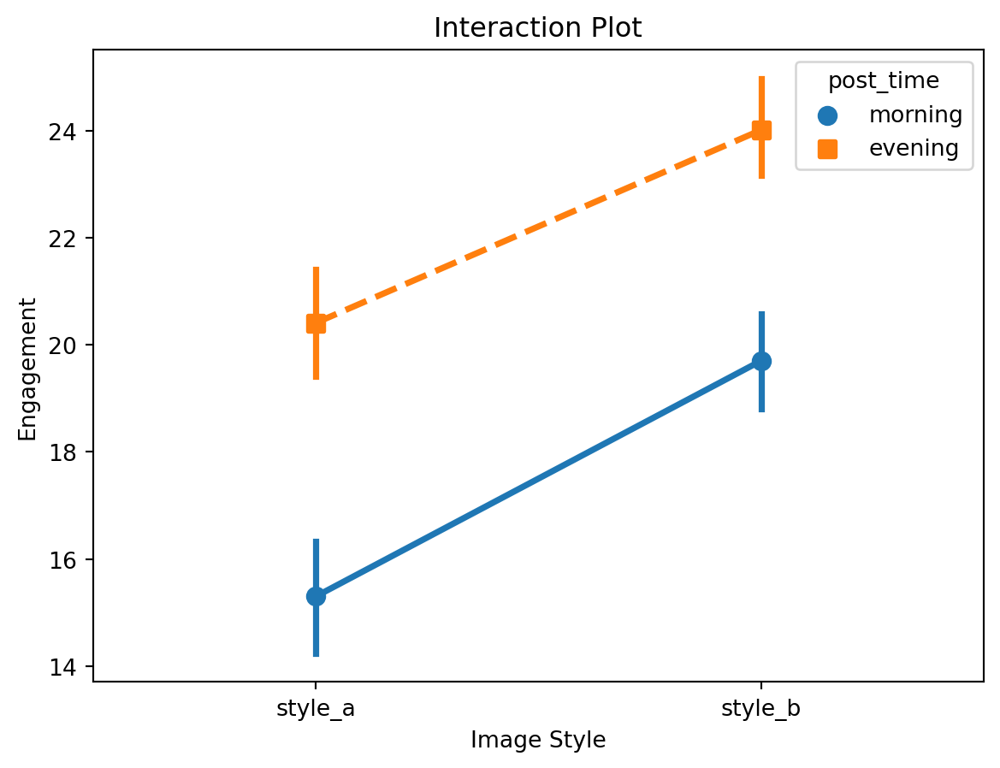
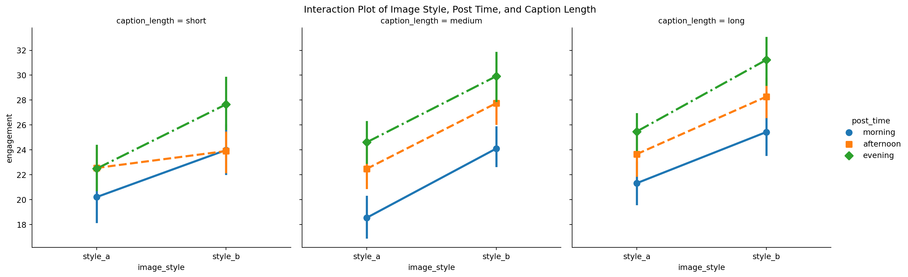
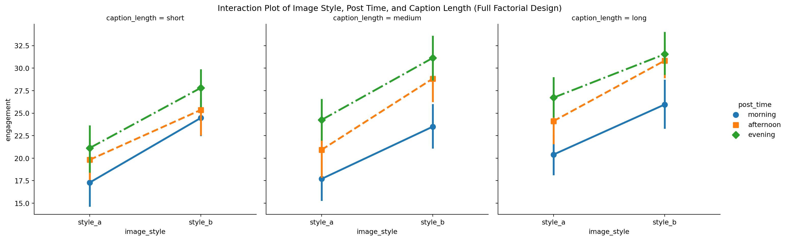

Chapter 11: Experimental Design
Randomized Controlled Trials (RCTs)
RCTs are considered the gold standard in clinical research for determining the efficacy of interventions. They involve randomly assigning participants to either the treatment group or the control group to ensure any differences observed between the groups are due to the intervention and not other factors.
Simple Randomization
Coin Flipping
Definition: Coin flipping is one of the most basic methods of randomization, where heads might mean assignment to the treatment group and tails to the control group. This method ensures that each participant has an equal chance of being assigned to either group.
Advantages: This method is simple and easy to implement, requiring no special equipment or software.
Disadvantages: It can lead to imbalances in group sizes, especially with smaller sample sizes. For example, in a small study with 20 participants, it is possible that 14 participants could be assigned to one group and only 6 to the other, which could affect the study’s validity.
Random Number Generators
Definition: Random number generators use algorithms to produce sequences of numbers that lack any pattern. These numbers are then used to allocate participants to different groups.
Procedure: Each participant is assigned a unique number. A random number generator is used to decide group allocation, ensuring an unbiased distribution.
Advantages: This method is more precise and can handle larger sample sizes better than coin flipping. For example, using software to generate random numbers ensures a more balanced allocation in a study with 200 participants.
Block Randomization
Fixed Block Sizes
Definition: In fixed block sizes, participants are divided into blocks (e.g., of size 4, 6, or 8), and within each block, half are assigned to the treatment group and half to the control group. This method ensures that the number of participants in each group is balanced at the end of each block.
Advantages: Ensures equal numbers in each group throughout the trial, which helps maintain balance and enhances the study’s statistical power.
Variable Block Sizes
Definition: Variable block sizes prevent predictability by varying the block sizes (e.g., 4, 6, 8) used in randomization. This method adds an extra layer of randomness.
Advantages: This method maintains balance while reducing the risk of allocation prediction. For example, in a clinical trial, variable block sizes prevent investigators from guessing the next assignment.
Stratified Randomization
Identifying Stratification Factors
Definition: Stratification factors are variables that can influence the outcome of the trial. These factors need to be identified before the trial starts to ensure they are evenly distributed across treatment groups.
Procedure: Stratify participants based on these factors and then randomize within each stratum. For example, in a trial studying the effect of a drug on blood pressure, participants might be stratified by age and gender.
Balancing Across Strata
Definition: Balancing across strata involves ensuring that within each subgroup, participants are equally distributed to treatment and control groups.
Advantages: This minimizes confounding variables, which can distort the true effect of the treatment. For instance, ensuring an equal distribution of participants with different baseline blood pressures across treatment groups in a hypertension study.
Cluster Randomization
Definition: Cluster randomization involves randomizing groups of participants (clusters) rather than individual participants. This is useful in situations where individual randomization is impractical or where participants are naturally grouped.
Advantages: This is useful in settings where individual randomization is impractical. For example, in a study assessing the effectiveness of a new educational program, entire schools might be randomized to either the intervention or control group.
Defining Clusters
Definition: Clusters can be defined based on geographical regions, schools, hospitals, or clinics.
Procedure: Each cluster is then randomly assigned to the intervention or control group. For example, different wards in a hospital could be randomized in a study on infection control measures.
Intracluster Correlation
Definition: Intracluster correlation refers to the degree to which participants within the same cluster resemble each other.
Implications: High intracluster correlation can reduce the effective sample size, necessitating larger clusters or more clusters to maintain statistical power. For instance, if patients within the same hospital ward share similar characteristics, the effective number of independent observations is reduced.
Crossover Designs
- Definition: Crossover designs involve participants receiving both the intervention and control at different times, with a washout period in between. This allows each participant to serve as their own control, reducing variability.
Washout Periods
Definition: A washout period is a break between treatments to ensure that the effects of the first treatment do not carry over into the second period.
Example: In a drug trial, participants might receive Drug A for 4 weeks, have a 2-week washout period, and then receive Drug B for another 4 weeks.
Carryover Effects
Definition: Carryover effects occur when the effects of the first treatment persist and affect the outcomes of the second treatment.
Mitigation: Proper washout periods help mitigate these effects. For instance, ensuring a long enough washout period between different diets in a nutritional study to prevent residual effects.
Adaptive Randomization
- Definition: Adaptive randomization allows for modifications to the randomization process based on interim results during the trial. This method aims to improve the ethical and scientific validity of the trial by potentially assigning more participants to the more effective treatment.
Response-Adaptive Randomization
Definition: Response-adaptive randomization adjusts the allocation ratio based on responses observed in the trial, potentially allocating more participants to the more effective treatment.
Example: In a clinical trial for a new cancer drug, if initial results show that the drug is more effective than the standard treatment, more patients might be allocated to the new drug arm.
Covariate-Adaptive Randomization
Definition: Covariate-adaptive randomization ensures balance across predefined covariates, adjusting the probability of assignment to maintain balance as the trial progresses.
Example: In a trial for a new hypertension drug, the randomization process might be adjusted to ensure that age and baseline blood pressure are balanced across treatment groups.
A/B Testing
A/B testing compares two versions (A and B) to determine which one performs better. It is widely used in marketing, web design, and user experience research.
Single Variable Testing
Definition: Single variable testing changes one element between versions A and B, allowing for a clear attribution of differences in outcomes to that single variable.
Example: Testing two different headlines for a webpage to see which one leads to higher click-through rates.
Scenario: Testing Two Different Headlines for a Promotional Post
Let’s assume Instagram wants to test two different headlines for a promotional post to see which one attracts more users to click through to a new feature announcement.
Headlines to Test
- Headline A: “Discover the Latest Instagram Features Now!”
- Headline B: “Unlock New Instagram Features Today!”
Objective
Determine which headline leads to a higher click-through rate (CTR).
Show the code
import pandas as pd
import numpy as np
from scipy import stats
# Sample data: user interactions with promotional post
data = {
'user_id': np.arange(1, 1001),
'headline': np.random.choice(['A', 'B'], 1000),
'clicked': np.random.choice([0, 1], 1000, p=[0.7, 0.3])
}
df = pd.DataFrame(data)
# Calculate CTR for each headline
ctr_a = df[df['headline'] == 'A']['clicked'].mean()
ctr_b = df[df['headline'] == 'B']['clicked'].mean()
# Display CTRs
print(f"CTR for Headline A: {ctr_a:.2%}")
print(f"CTR for Headline B: {ctr_b:.2%}")
# Perform A/B test using a two-proportion z-test
count_a = df[df['headline'] == 'A']['clicked'].sum()
count_b = df[df['headline'] == 'B']['clicked'].sum()
n_a = df[df['headline'] == 'A'].shape[0]
n_b = df[df['headline'] == 'B'].shape[0]
# Compute proportions
p1 = count_a / n_a
p2 = count_b / n_b
p_pool = (count_a + count_b) / (n_a + n_b)
z_score = (p1 - p2) / np.sqrt(p_pool * (1 - p_pool) * (1/n_a + 1/n_b))
p_value = stats.norm.sf(abs(z_score)) * 2 # Two-tailed test
print(f"Z-score: {z_score}")
print(f"P-value: {p_value}")
# Determine statistical significance
alpha = 0.05
if p_value < alpha:
print("The difference in CTR between the two headlines is statistically significant.")
else:
print("The difference in CTR between the two headlines is not statistically significant.")CTR for Headline A: 32.10%
CTR for Headline B: 31.91%
Z-score: 0.0651046633777244
P-value: 0.9480906674738749
The difference in CTR between the two headlines is not statistically significant.Multivariate Testing (MVT)
Definition: Multivariate testing examines multiple variables simultaneously, testing different combinations to understand the effect of each variable and their interactions.
Example: Testing different combinations of headlines, images, and call-to-action buttons on a webpage to determine the optimal combination for maximizing conversions.
Split URL Testing
Definition: Split URL testing involves directing users to different URLs (each hosting a different version of the content) to compare performance metrics like conversion rates.
Example: Directing half of the website traffic to a new landing page and the other half to the original page to compare conversion rates.
Scenario: Testing Two Different Landing Pages
Let’s assume Instagram wants to test a new landing page against the original landing page to see which one results in higher conversion rates.
URLs to Test
- Original Landing Page: original_page_url
- New Landing Page: new_page_url
Objective
Compare the conversion rates between the original landing page and the new landing page.
Show the code
import pandas as pd
import numpy as np
from statsmodels.stats.proportion import proportions_ztest
# Sample data: user interactions with the landing pages
data = {
'user_id': np.arange(1, 2001),
'landing_page': np.random.choice(['original', 'new'], 2000),
'converted': np.random.choice([0, 1], 2000, p=[0.7, 0.3])
}
df = pd.DataFrame(data)
# Calculate conversion rate for each landing page
conversion_rate_original = df[df['landing_page'] == 'original']['converted'].mean()
conversion_rate_new = df[df['landing_page'] == 'new']['converted'].mean()
# Display conversion rates
print(f"Conversion Rate for Original Landing Page: {conversion_rate_original:.2%}")
print(f"Conversion Rate for New Landing Page: {conversion_rate_new:.2%}")
# Perform z-test for proportions
count = np.array([
df[df['landing_page'] == 'original']['converted'].sum(),
df[df['landing_page'] == 'new']['converted'].sum()
])
nobs = np.array([
df[df['landing_page'] == 'original'].shape[0],
df[df['landing_page'] == 'new'].shape[0]
])
stat, p_value = proportions_ztest(count, nobs)
print(f"Z-score: {stat}")
print(f"P-value: {p_value}")
# Determine statistical significance
alpha = 0.05
if p_value < alpha:
print("The difference in conversion rates between the two landing pages is statistically significant.")
else:
print("The difference in conversion rates between the two landing pages is not statistically significant.")Conversion Rate for Original Landing Page: 31.41%
Conversion Rate for New Landing Page: 30.38%
Z-score: 0.4980515932709024
P-value: 0.6184476779746853
The difference in conversion rates between the two landing pages is not statistically significant.Multi-Page Testing
Definition: Multi-page testing examines changes across multiple pages, ensuring a consistent user experience and testing the combined effect of changes across a user journey.
Example: Testing a new design for an entire checkout process on an e-commerce site to see if it reduces cart abandonment rates.
Scenario: Testing a New Design for the Entire Checkout Process
Let’s assume Facebook Marketplace wants to test a new design for the entire checkout process, which consists of multiple pages (e.g., cart page, shipping page, payment page), to determine if it reduces cart abandonment rates compared to the current checkout process.
Checkout Process Pages
- Original Checkout Process Pages: original_checkout_pages
- New Checkout Process Pages: new_checkout_pages
Objective
Compare the cart abandonment rates between the original multi-page checkout process and the new multi-page checkout process.
Show the code
import pandas as pd
import numpy as np
from statsmodels.stats.proportion import proportions_ztest
# Simulate user interactions with the multi-page checkout process
data = []
np.random.seed(0) # For reproducibility
# Define the stages of the checkout process
checkout_stages = ['cart_page', 'shipping_page', 'payment_page']
# Simulate data for users going through the original checkout process
for user_id in range(1, 1501):
completed_purchase = True
for stage in checkout_stages:
if np.random.rand() > 0.85: # 15% chance of abandoning at each stage
completed_purchase = False
break
data.append([user_id, 'original', completed_purchase])
# Simulate data for users going through the new checkout process
for user_id in range(1501, 3001):
completed_purchase = True
for stage in checkout_stages:
if np.random.rand() > 0.90: # 10% chance of abandoning at each stage
completed_purchase = False
break
data.append([user_id, 'new', completed_purchase])
# Create a DataFrame
df = pd.DataFrame(data, columns=['user_id', 'checkout_process', 'completed_purchase'])
# Calculate completion rate for each checkout process
completion_rate_original = df[df['checkout_process'] == 'original']['completed_purchase'].mean()
completion_rate_new = df[df['checkout_process'] == 'new']['completed_purchase'].mean()
# Display completion rates
print(f"Completion Rate for Original Checkout Process: {completion_rate_original:.2%}")
print(f"Completion Rate for New Checkout Process: {completion_rate_new:.2%}")
# Perform z-test for proportions
count = np.array([
df[df['checkout_process'] == 'original']['completed_purchase'].sum(),
df[df['checkout_process'] == 'new']['completed_purchase'].sum()
])
nobs = np.array([
df[df['checkout_process'] == 'original'].shape[0],
df[df['checkout_process'] == 'new'].shape[0]
])
stat, p_value = proportions_ztest(count, nobs)
print(f"Z-score: {stat}")
print(f"P-value: {p_value}")
# Determine statistical significance
alpha = 0.05
if p_value < alpha:
print("The difference in completion rates between the two checkout processes is statistically significant.")
else:
print("The difference in completion rates between the two checkout processes is not statistically significant.")Completion Rate for Original Checkout Process: 59.87%
Completion Rate for New Checkout Process: 74.87%
Z-score: -8.761301842485425
P-value: 1.9300821685769852e-18
The difference in completion rates between the two checkout processes is statistically significant.Sequential Testing
Definition: Sequential testing allows for continuous monitoring and analysis of results as data is collected, making decisions about the experiment based on interim results.
Example: Monitoring the performance of a new advertisement in real-time and deciding to stop the test early if it is clearly outperforming the current ad.
Scenario: Monitoring a New Advertisement
Let’s assume Facebook wants to monitor the performance of a new advertisement in real-time and decide whether to stop the test early if it is clearly outperforming the current ad.
Ads to Test
- Current Ad: current_ad
- New Ad: new_ad
Objective
Continuously monitor the click-through rate (CTR) of both ads and decide whether to stop the test early if the new ad is significantly outperforming the current ad.
Show the code
import pandas as pd
import numpy as np
from statsmodels.stats.proportion import proportions_ztest
# Simulate streaming data of user interactions with ads
np.random.seed(0) # For reproducibility
n = 5000 # Total number of users
batch_size = 500 # Size of each batch of data
current_ctr = 0.02 # Click-through rate for current ad
new_ctr = 0.03 # Click-through rate for new ad
# Initialize counters
current_ad_clicks = 0
current_ad_impressions = 0
new_ad_clicks = 0
new_ad_impressions = 0
# Sequential testing
stop_test = False
for batch in range(n // batch_size):
if stop_test:
break
# Simulate a batch of data
current_batch_impressions = np.random.binomial(batch_size, 0.5)
new_batch_impressions = batch_size - current_batch_impressions
current_batch_clicks = np.random.binomial(current_batch_impressions, current_ctr)
new_batch_clicks = np.random.binomial(new_batch_impressions, new_ctr)
# Update counters
current_ad_impressions += current_batch_impressions
new_ad_impressions += new_batch_impressions
current_ad_clicks += current_batch_clicks
new_ad_clicks += new_batch_clicks
# Calculate interim CTRs
current_ad_ctr = current_ad_clicks / current_ad_impressions
new_ad_ctr = new_ad_clicks / new_ad_impressions
# Perform z-test for proportions
count = np.array([current_ad_clicks, new_ad_clicks])
nobs = np.array([current_ad_impressions, new_ad_impressions])
stat, p_value = proportions_ztest(count, nobs)
print(f"Batch {batch + 1}:")
print(f"Current Ad CTR: {current_ad_ctr:.2%}")
print(f"New Ad CTR: {new_ad_ctr:.2%}")
print(f"Z-score: {stat:.2f}")
print(f"P-value: {p_value:.4f}")
# Check if the p-value is less than the significance level (alpha = 0.05)
if p_value < 0.05:
print("The new ad is significantly outperforming the current ad. Stopping the test early.")
stop_test = True
if not stop_test:
print("The test did not reach significance. Continue collecting data.")Batch 1:
Current Ad CTR: 1.98%
New Ad CTR: 3.24%
Z-score: -0.89
P-value: 0.3751
Batch 2:
Current Ad CTR: 1.79%
New Ad CTR: 3.82%
Z-score: -1.95
P-value: 0.0513
Batch 3:
Current Ad CTR: 1.46%
New Ad CTR: 3.07%
Z-score: -2.10
P-value: 0.0360
The new ad is significantly outperforming the current ad. Stopping the test early.Bandit Algorithms
- Definition: Bandit algorithms dynamically allocate traffic to different versions based on their performance, aiming to maximize overall outcomes.
Epsilon-Greedy
Definition: The epsilon-greedy algorithm explores all versions with a small probability (epsilon) but mostly exploits the version with the best observed performance.
Example: Allocating 10% of traffic to explore different versions of a webpage, while 90% of traffic is directed to the current best-performing version.
Scenario: Allocating Traffic to Different Versions of a Webpage
Let’s assume Facebook wants to allocate 10% of traffic to explore different versions of a webpage, while 90% of traffic is directed to the current best-performing version.
Versions to Test
Objective
Use the epsilon-greedy algorithm to dynamically allocate traffic to the different versions based on their performance, aiming to maximize the overall click-through rate (CTR).
Show the code
import numpy as np
import pandas as pd
# Define the versions
versions = ['A', 'B', 'C']
# Initialize counters
clicks = {version: 0 for version in versions}
impressions = {version: 0 for version in versions}
# Define the epsilon value
epsilon = 0.1
# Simulate user interactions
np.random.seed(0)
n_users = 10000
true_ctrs = {'A': 0.04, 'B': 0.05, 'C': 0.03}
data = []
for user_id in range(1, n_users + 1):
# Decide whether to explore or exploit
if np.random.rand() < epsilon:
# Explore: randomly select a version
selected_version = np.random.choice(versions)
else:
# Exploit: select the version with the highest observed CTR
ctrs = {version: clicks[version] / impressions[version] if impressions[version] > 0 else 0 for version in versions}
selected_version = max(ctrs, key=ctrs.get)
# Simulate whether the user clicks based on the true CTR of the selected version
click = np.random.rand() < true_ctrs[selected_version]
# Update counters
impressions[selected_version] += 1
clicks[selected_version] += int(click)
# Collect data
data.append([user_id, selected_version, click])
# Create a DataFrame
df = pd.DataFrame(data, columns=['user_id', 'version', 'click'])
# Calculate the final observed CTR for each version
final_ctrs = {version: clicks[version] / impressions[version] for version in versions}
print("Final observed CTRs:")
for version, ctr in final_ctrs.items():
print(f"Version {version}: {ctr:.2%}")
# Determine the best-performing version
best_version = max(final_ctrs, key=final_ctrs.get)
print(f"The best-performing version is: {best_version}")Final observed CTRs:
Version A: 3.84%
Version B: 5.46%
Version C: 3.73%
The best-performing version is: BExplanation
Data Simulation
The code simulates user interactions with three different versions of a webpage. Each user is either assigned to a version based on exploration (10% chance) or exploitation (90% chance).
Epsilon-Greedy Algorithm
Exploration
- With a probability of epsilon (0.1), a version is randomly selected to gather more data.
Exploitation
- With a probability of 1 - epsilon (0.9), the version with the highest observed click-through rate (CTR) so far is selected.
Updating Counters
- The code updates the counters for clicks and impressions for each version after each user interaction.
Calculating Final CTRs
The final observed CTR for each version is calculated by dividing the total number of clicks by the total number of impressions for each version.
\[ CTR = \frac{\text{Total Clicks}}{\text{Total Impressions}} \]
Determining the Best-Performing Version
The version with the highest observed CTR is identified as the best-performing version.
Thompson Sampling
Definition: Thompson sampling uses Bayesian probability to balance exploration and exploitation, choosing versions based on the probability of being the best option.
Example: Continuously updating beliefs about which ad campaign is most effective based on conversion data, and allocating more traffic to the most promising campaigns.
Scenario: Allocating Traffic to Different Ad Campaigns
Let’s assume Instagram wants to allocate traffic to different ad campaigns and continuously update their beliefs about which campaign is most effective based on conversion data.
Ad Campaigns to Test
- Campaign A: campaign_a
- Campaign B: campaign_b
- Campaign C: campaign_c
Objective
Use Thompson sampling to dynamically allocate traffic to the different ad campaigns based on the probability of each being the best option, aiming to maximize the overall conversion rate.
Show the code
import numpy as np
import pandas as pd
import matplotlib.pyplot as plt
# Define the campaigns
campaigns = ['A', 'B', 'C']
# True conversion rates for each campaign (unknown in real scenario)
true_conversion_rates = {'A': 0.05, 'B': 0.07, 'C': 0.04}
# Initialize parameters for the Beta distribution
successes = {campaign: 1 for campaign in campaigns} # Prior success count (alpha)
failures = {campaign: 1 for campaign in campaigns} # Prior failure count (beta)
# Simulate user interactions
np.random.seed(0)
n_users = 10000
data = []
for user_id in range(1, n_users + 1):
# Sample from the Beta distribution for each campaign
sampled_probs = {campaign: np.random.beta(successes[campaign], failures[campaign]) for campaign in campaigns}
# Select the campaign with the highest sampled probability
selected_campaign = max(sampled_probs, key=sampled_probs.get)
# Simulate whether the user converts based on the true conversion rate of the selected campaign
conversion = np.random.rand() < true_conversion_rates[selected_campaign]
# Update the Beta distribution parameters
if conversion:
successes[selected_campaign] += 1
else:
failures[selected_campaign] += 1
# Collect data
data.append([user_id, selected_campaign, conversion])
# Create a DataFrame
df = pd.DataFrame(data, columns=['user_id', 'campaign', 'conversion'])
# Calculate the final observed conversion rate for each campaign
final_conversion_rates = {campaign: df[df['campaign'] == campaign]['conversion'].mean() for campaign in campaigns}
print("Final observed conversion rates:")
for campaign, rate in final_conversion_rates.items():
print(f"Campaign {campaign}: {rate:.2%}")
# Determine the best-performing campaign
best_campaign = max(final_conversion_rates, key=final_conversion_rates.get)
print(f"The best-performing campaign is: {best_campaign}")
# Plot the final Beta distributions
x = np.linspace(0, 0.2, 100)
for campaign in campaigns:
y = np.random.beta(successes[campaign], failures[campaign], size=10000)
plt.hist(y, bins=100, alpha=0.5, label=f'Campaign {campaign}')
plt.xlabel('Conversion Rate')
plt.ylabel('Frequency')
plt.title('Posterior Distributions of Conversion Rates')
plt.legend()
plt.show()Final observed conversion rates:
Campaign A: 5.73%
Campaign B: 6.33%
Campaign C: 3.31%
The best-performing campaign is: BExplanation
Data Simulation
The code simulates user interactions with three different ad campaigns. Each user is assigned to a campaign based on the Thompson sampling algorithm, which uses Bayesian probability to balance exploration and exploitation.
Thompson Sampling Algorithm
Beta Distribution
- The algorithm maintains a Beta distribution for each campaign, representing the probability of conversion. The Beta distribution is parameterized by the number of successes (conversions) and failures (non-conversions).
\[ \text{Beta}(\alpha, \beta) \] where \(\alpha\) is the number of conversions (successes) + 1, and \(\beta\) is the number of non-conversions (failures) + 1.
Sampling
- For each user, the algorithm samples a conversion probability from the Beta distribution of each campaign.
Selection
- The campaign with the highest sampled probability is selected for the user.
Updating Parameters
- After each user interaction, the algorithm updates the parameters of the Beta distribution for the selected campaign based on whether the user converted or not.
Calculating Final Conversion Rates
The final observed conversion rate for each campaign is calculated by dividing the total number of conversions by the total number of impressions for each campaign.
\[ \text{Conversion Rate} = \frac{\text{Total Conversions}}{\text{Total Impressions}} \]
Determining the Best-Performing Campaign
The campaign with the highest observed conversion rate is identified as the best-performing campaign.
Plotting Beta Distributions
The final Beta distributions for the conversion rates of each campaign are plotted to visualize the probability distributions after all user interactions.
Bayesian A/B Testing
Definition: Bayesian A/B testing uses Bayesian statistics to update the probability of each version being better as data is collected, providing a probabilistic framework for decision-making.
Example: Using prior beliefs about the performance of two website designs and updating these beliefs as user data is collected to decide which design to implement.
Scenario: Testing Two Website Designs
Let’s assume Instagram wants to test two different website designs (Design A and Design B) and use Bayesian A/B testing to update the probability of each design being better based on user data.
Designs to Test
Objective
Use Bayesian A/B testing to update beliefs about the performance of each design and decide which design to implement based on the collected data.
Show the code
import numpy as np
import pandas as pd
import matplotlib.pyplot as plt
# Define the designs
designs = ['A', 'B']
# True conversion rates for each design (unknown in real scenario)
true_conversion_rates = {'A': 0.04, 'B': 0.05}
# Initialize parameters for the Beta distribution (prior beliefs)
alpha_prior = 1
beta_prior = 1
# Initialize successes and failures
successes = {design: alpha_prior for design in designs}
failures = {design: beta_prior for design in designs}
# Simulate user interactions
np.random.seed(0)
n_users = 10000
data = []
for user_id in range(1, n_users + 1):
# Randomly assign the user to a design
assigned_design = np.random.choice(designs)
# Simulate whether the user converts based on the true conversion rate of the assigned design
conversion = np.random.rand() < true_conversion_rates[assigned_design]
# Update the Beta distribution parameters
if conversion:
successes[assigned_design] += 1
else:
failures[assigned_design] += 1
# Collect data
data.append([user_id, assigned_design, conversion])
# Create a DataFrame
df = pd.DataFrame(data, columns=['user_id', 'design', 'conversion'])
# Calculate the final observed conversion rate for each design
final_conversion_rates = {design: df[df['design'] == design]['conversion'].mean() for design in designs}
print("Final observed conversion rates:")
for design, rate in final_conversion_rates.items():
print(f"Design {design}: {rate:.2%}")
# Calculate the posterior distributions
posterior_distributions = {design: np.random.beta(successes[design], failures[design], size=10000) for design in designs}
# Determine the probability that each design is better
prob_better = (posterior_distributions['A'] < posterior_distributions['B']).mean()
print(f"Probability that Design B is better than Design A: {prob_better:.2%}")
# Plot the posterior distributions
x = np.linspace(0, 0.1, 1000)
for design in designs:
plt.hist(posterior_distributions[design], bins=100, alpha=0.5, label=f'Design {design}')
plt.xlabel('Conversion Rate')
plt.ylabel('Frequency')
plt.title('Posterior Distributions of Conversion Rates')
plt.legend()
plt.show()Final observed conversion rates:
Design A: 4.04%
Design B: 5.70%
Probability that Design B is better than Design A: 99.98%
Explanation
Data Simulation
The code simulates user interaction data for 10,000 users. Each user is randomly assigned to one of the two designs, and whether the user converts (e.g., signs up, makes a purchase) is simulated based on the true conversion rates of the designs.
Beta Distribution
The algorithm maintains a Beta distribution for each design, representing the probability of conversion. The Beta distribution is parameterized by the number of successes (conversions) and failures (non-conversions).
\[ \text{Beta}(\alpha, \beta) \] where \(\alpha\) is the number of conversions (successes) + 1, and \(\beta\) is the number of non-conversions (failures) + 1.
Updating Parameters
After each user interaction, the algorithm updates the parameters of the Beta distribution for the assigned design based on whether the user converted or not.
Calculating Final Conversion Rates
The final observed conversion rate for each design is calculated by dividing the total number of conversions by the total number of impressions for each design.
\[ \text{Conversion Rate} = \frac{\text{Total Conversions}}{\text{Total Impressions}} \]
Posterior Distributions
The posterior distributions for the conversion rates of each design are calculated using the updated parameters of the Beta distributions.
Probability of Being Better
The probability that Design B is better than Design A is calculated by comparing samples from the posterior distributions of the two designs.
Plotting Beta Distributions
The final Beta distributions for the conversion rates of each design are plotted to visualize the probability distributions after all user interactions. This helps in understanding the likelihood of each design being the better option based on the collected data.
Frequentist vs. Bayesian Approaches
Definition: Frequentist approaches rely on fixed sample sizes and p-values, while Bayesian approaches update beliefs based on prior distributions and observed data.
Example: A frequentist A/B test might be designed to collect data until a predefined sample size is reached, whereas a Bayesian A/B test would continuously update the probability that one version is better than the other based on incoming data.
Scenario: Testing Two Website Designs
Let’s assume Instagram wants to test two different website designs (Design A and Design B) and compare the Frequentist and Bayesian approaches to decide which design to implement based on user data.
Designs to Test
Objective
Compare the Frequentist and Bayesian approaches in terms of how they handle the decision-making process based on user data.
Frequentist Approach
Show the code
import numpy as np
import pandas as pd
from statsmodels.stats.proportion import proportions_ztest
# Simulate user interactions
np.random.seed(0)
n_users = 10000
true_conversion_rates = {'A': 0.04, 'B': 0.05}
data = []
for user_id in range(1, n_users + 1):
assigned_design = np.random.choice(['A', 'B'])
conversion = np.random.rand() < true_conversion_rates[assigned_design]
data.append([user_id, assigned_design, conversion])
# Create a DataFrame
df = pd.DataFrame(data, columns=['user_id', 'design', 'conversion'])
# Calculate conversion rates
conversion_rate_A = df[df['design'] == 'A']['conversion'].mean()
conversion_rate_B = df[df['design'] == 'B']['conversion'].mean()
# Perform a two-proportion z-test
count = np.array([df[df['design'] == 'A']['conversion'].sum(), df[df['design'] == 'B']['conversion'].sum()])
nobs = np.array([df[df['design'] == 'A'].shape[0], df[df['design'] == 'B'].shape[0]])
z_score, p_value = proportions_ztest(count, nobs)
print(f"Conversion Rate for Design A: {conversion_rate_A:.2%}")
print(f"Conversion Rate for Design B: {conversion_rate_B:.2%}")
print(f"Z-score: {z_score:.2f}")
print(f"P-value: {p_value:.4f}")
alpha = 0.05
if p_value < alpha:
print("The difference in conversion rates is statistically significant. Design B is better.")
else:
print("The difference in conversion rates is not statistically significant. No conclusive winner.")Conversion Rate for Design A: 4.04%
Conversion Rate for Design B: 5.70%
Z-score: -3.86
P-value: 0.0001
The difference in conversion rates is statistically significant. Design B is better.Bayesian Approach
Show the code
import numpy as np
import pandas as pd
import matplotlib.pyplot as plt
# Initialize parameters for the Beta distribution (prior beliefs)
alpha_prior = 1
beta_prior = 1
# Initialize successes and failures
successes = {'A': alpha_prior, 'B': alpha_prior}
failures = {'A': beta_prior, 'B': beta_prior}
# Simulate user interactions
np.random.seed(0)
n_users = 10000
true_conversion_rates = {'A': 0.04, 'B': 0.05}
data = []
for user_id in range(1, n_users + 1):
assigned_design = np.random.choice(['A', 'B'])
conversion = np.random.rand() < true_conversion_rates[assigned_design]
if conversion:
successes[assigned_design] += 1
else:
failures[assigned_design] += 1
data.append([user_id, assigned_design, conversion])
# Create a DataFrame
df = pd.DataFrame(data, columns=['user_id', 'design', 'conversion'])
# Calculate the posterior distributions
posterior_distributions = {design: np.random.beta(successes[design], failures[design], size=10000) for design in ['A', 'B']}
# Determine the probability that each design is better
prob_B_better_than_A = (posterior_distributions['A'] < posterior_distributions['B']).mean()
print(f"Probability that Design B is better than Design A: {prob_B_better_than_A:.2%}")
# Plot the posterior distributions
x = np.linspace(0, 0.1, 1000)
for design in ['A', 'B']:
plt.hist(posterior_distributions[design], bins=100, alpha=0.5, label=f'Design {design}')
plt.xlabel('Conversion Rate')
plt.ylabel('Frequency')
plt.title('Posterior Distributions of Conversion Rates')
plt.legend()
plt.show()Probability that Design B is better than Design A: 99.98%Explanation
Frequentist Approach
Data Simulation: User interactions are simulated, assigning each user to one of the two designs and recording whether they convert.
Conversion Rate Calculation: The conversion rates for both designs are calculated.
Two-Proportion Z-Test: A z-test for proportions is performed to determine if the difference in conversion rates is statistically significant, based on a predefined significance level (alpha = 0.05).
Results Interpretation: If the p-value is less than alpha, the difference in conversion rates is considered statistically significant, indicating a winner.
Bayesian Approach
Data Simulation: User interactions are simulated similarly to the frequentist approach.
Beta Distribution: The algorithm maintains a Beta distribution for each design, representing the probability of conversion. The Beta distribution is updated with each user interaction.
Posterior Distributions: The posterior distributions for the conversion rates of each design are calculated using the updated parameters of the Beta distributions.
Probability of Being Better: The probability that Design B is better than Design A is calculated by comparing samples from the posterior distributions of the two designs.
Results Interpretation: The final probabilities and posterior distributions provide a probabilistic framework for decision-making, updating beliefs about the performance of each design based on the observed data.
This example highlights the key differences between the frequentist and Bayesian approaches in handling A/B testing and decision-making processes.
Factorial Designs
Factorial designs test multiple factors simultaneously, understanding the effects of each factor and their interactions.
Two-Factor Factorial Designs
Definition: Two-factor factorial designs involve two independent variables, each at multiple levels, allowing for the assessment of main effects and interactions.
Example: Testing the effect of different dosages of a drug (factor 1) and different frequencies of administration (factor 2) on patient outcomes.
Scenario: Testing the Effect of Image Styles and Post Times on User Engagement
Let’s assume Instagram wants to test the effect of different image styles and different post times on user engagement (likes and comments).
Factors to Test
- Factor 1 (Image Style): style_a, style_b
- Factor 2 (Post Time): morning, evening
Objective
Use a two-factor factorial design to assess the main effects and interactions between image styles and post times on user engagement.
Show the code
import numpy as np
import pandas as pd
import statsmodels.api as sm
from statsmodels.formula.api import ols
import matplotlib.pyplot as plt
import seaborn as sns
# Define the levels for each factor
image_styles = ['style_a', 'style_b']
post_times = ['morning', 'evening']
# Simulate user engagement data
np.random.seed(0)
n_samples = 100 # Number of samples per combination
data = []
for style in image_styles:
for time in post_times:
for _ in range(n_samples):
engagement = np.random.normal(loc=(10 if style == 'style_a' else 15) + (5 if time == 'morning' else 10), scale=5)
data.append([style, time, engagement])
# Create a DataFrame
df = pd.DataFrame(data, columns=['image_style', 'post_time', 'engagement'])
# Perform ANOVA
model = ols('engagement ~ C(image_style) * C(post_time)', data=df).fit()
anova_table = sm.stats.anova_lm(model, typ=2)
print(anova_table)
# Plot the interaction
interaction_plot = sns.pointplot(x='image_style', y='engagement', hue='post_time', data=df, markers=["o", "s"], linestyles=["-", "--"])
plt.title('Interaction Plot')
plt.ylabel('Engagement')
plt.xlabel('Image Style')
plt.show() sum_sq df F PR(>F)
C(image_style) 1604.302982 1.0 65.896540 6.069124e-15
C(post_time) 2219.918656 1.0 91.182875 1.389053e-19
C(image_style):C(post_time) 15.953913 1.0 0.655305 4.187085e-01
Residual 9640.930846 396.0 NaN NaN
Explanation
Data Simulation
The code simulates user engagement data (e.g., likes and comments) for different combinations of image styles and post times. Engagement is normally distributed with means that depend on the image style and post time.
ANOVA Model
An ANOVA (Analysis of Variance) model is used to analyze the data. The formula ‘engagement ~ C(image_style) * C(post_time)’ specifies that the model should consider both main effects (image style and post time) and their interaction.
ANOVA Table
The ANOVA table summarizes the results of the analysis, including the sum of squares, degrees of freedom, F-statistic, and p-value for each factor and their interaction. Significant p-values (typically p < 0.05) indicate that the factor or interaction has a significant effect on user engagement.
Interaction Plot
The interaction plot visually represents the interaction between the two factors. It shows the mean engagement for each combination of image style and post time, helping to identify any interaction effects.
Interpretation
Main Effects: The ANOVA table allows you to assess the main effects of image style and post time on user engagement.
Interaction Effects: The interaction term in the ANOVA table and the interaction plot help identify whether the effect of one factor depends on the level of the other factor.
Practical Implications: By understanding the main effects and interactions, Instagram can make data-driven decisions about the optimal combination of image styles and post times to maximize user engagement.
This example demonstrates how a two-factor factorial design can be used to test multiple factors simultaneously and understand their individual and combined effects on an outcome of interest.
Three-Factor (and Higher) Factorial Designs
Definition: Three-factor designs include three independent variables, and higher-order designs involve more factors, increasing the complexity and potential for interaction effects.
Example: Studying the combined effects of drug dosage, frequency of administration, and diet on patient health outcomes.
Scenario: Testing the Effects of Image Styles, Post Times, and Caption Lengths on User Engagement
Let’s assume Instagram wants to test the combined effects of different image styles, post times, and caption lengths on user engagement (likes and comments).
Factors to Test
- Factor 1 (Image Style): style_a, style_b
- Factor 2 (Post Time): morning, evening
- Factor 3 (Caption Length): short, long
Objective
Use a three-factor factorial design to assess the main effects and interactions among image styles, post times, and caption lengths on user engagement.
Show the code
import numpy as np
import pandas as pd
import statsmodels.api as sm
from statsmodels.formula.api import ols
import matplotlib.pyplot as plt
import seaborn as sns
# Define the levels for each factor
image_styles = ['style_a', 'style_b']
post_times = ['morning', 'evening']
caption_lengths = ['short', 'long']
# Simulate user engagement data
np.random.seed(0)
n_samples = 50 # Number of samples per combination
data = []
for style in image_styles:
for time in post_times:
for length in caption_lengths:
for _ in range(n_samples):
base_engagement = (10 if style == 'style_a' else 15) + (5 if time == 'morning' else 10) + (3 if length == 'short' else 7)
engagement = np.random.normal(loc=base_engagement, scale=5)
data.append([style, time, length, engagement])
# Create a DataFrame
df = pd.DataFrame(data, columns=['image_style', 'post_time', 'caption_length', 'engagement'])
# Perform ANOVA
model = ols('engagement ~ C(image_style) * C(post_time) * C(caption_length)', data=df).fit()
anova_table = sm.stats.anova_lm(model, typ=2)
print(anova_table)
# Plot the interaction
interaction_plot = sns.catplot(x='image_style', y='engagement', hue='caption_length', col='post_time', kind='point', data=df, markers=["o", "s"], linestyles=["-", "--"])
plt.subplots_adjust(top=0.9)
interaction_plot.fig.suptitle('Interaction Plot of Image Style, Post Time, and Caption Length')
plt.show() sum_sq df F \
C(image_style) 1604.302982 1.0 65.936571
C(post_time) 2219.918656 1.0 91.238266
C(caption_length) 1244.862354 1.0 51.163624
C(image_style):C(post_time) 15.953913 1.0 0.655703
C(image_style):C(caption_length) 64.742353 1.0 2.660899
C(post_time):C(caption_length) 15.643143 1.0 0.642930
C(image_style):C(post_time):C(caption_length) 0.537860 1.0 0.022106
Residual 9537.753694 392.0 NaN
PR(>F)
C(image_style) 6.106055e-15
C(post_time) 1.415302e-19
C(caption_length) 4.200052e-12
C(image_style):C(post_time) 4.185723e-01
C(image_style):C(caption_length) 1.036457e-01
C(post_time):C(caption_length) 4.231374e-01
C(image_style):C(post_time):C(caption_length) 8.818821e-01
Residual NaN Explanation
Data Simulation
The code simulates user engagement data for different combinations of image styles, post times, and caption lengths. Engagement is normally distributed with means that depend on the combination of these factors.
ANOVA Model
An ANOVA (Analysis of Variance) model is used to analyze the data. The formula ‘engagement ~ C(image_style) * C(post_time) * C(caption_length)’ specifies that the model should consider main effects and all possible interactions among the three factors.
ANOVA Table
The ANOVA table summarizes the results of the analysis, including the sum of squares, degrees of freedom, F-statistic, and p-value for each factor and their interactions. Significant p-values (typically p < 0.05) indicate that the factor or interaction has a significant effect on user engagement.
Interaction Plot
The interaction plot visually represents the interactions among the three factors. It shows the mean engagement for each combination of image style, post time, and caption length, helping to identify any interaction effects.
Interpretation
Main Effects: The ANOVA table allows you to assess the main effects of image style, post time, and caption length on user engagement.
Interaction Effects: The interaction terms in the ANOVA table and the interaction plot help identify whether the effect of one factor depends on the levels of the other factors.
Practical Implications: By understanding the main effects and interactions, Instagram can make data-driven decisions about the optimal combination of image styles, post times, and caption lengths to maximize user engagement.
This example demonstrates how a three-factor factorial design can be used to test multiple factors simultaneously and understand their individual and combined effects on an outcome of interest. As the number of factors increases, the complexity of the analysis and the potential for interaction effects also increase, providing a richer understanding of the factors influencing the outcome.
Full Factorial Designs
Definition: Full factorial designs test all possible combinations of factors and levels, providing comprehensive insights but requiring large sample sizes.
Example: In an agricultural study, testing the effects of different fertilizers, watering schedules, and plant varieties on crop yield.
Scenario: Testing the Effects of Image Styles, Post Times, and Caption Lengths on User Engagement
Let’s assume Instagram wants to test all possible combinations of different image styles, post times, and caption lengths on user engagement (likes and comments).
Factors to Test
- Factor 1 (Image Style): style_a, style_b
- Factor 2 (Post Time): morning, afternoon, evening
- Factor 3 (Caption Length): short, medium, long
Objective
Use a full factorial design to assess the main effects and interactions among image styles, post times, and caption lengths on user engagement.
Show the code
import numpy as np
import pandas as pd
import statsmodels.api as sm
from statsmodels.formula.api import ols
import matplotlib.pyplot as plt
import seaborn as sns
# Define the levels for each factor
image_styles = ['style_a', 'style_b']
post_times = ['morning', 'afternoon', 'evening']
caption_lengths = ['short', 'medium', 'long']
# Simulate user engagement data
np.random.seed(0)
n_samples = 30 # Number of samples per combination
data = []
for style in image_styles:
for time in post_times:
for length in caption_lengths:
for _ in range(n_samples):
base_engagement = (10 if style == 'style_a' else 15) + \
(5 if time == 'morning' else 7 if time == 'afternoon' else 10) + \
(3 if length == 'short' else 5 if length == 'medium' else 7)
engagement = np.random.normal(loc=base_engagement, scale=5)
data.append([style, time, length, engagement])
# Create a DataFrame
df = pd.DataFrame(data, columns=['image_style', 'post_time', 'caption_length', 'engagement'])
# Perform ANOVA
model = ols('engagement ~ C(image_style) * C(post_time) * C(caption_length)', data=df).fit()
anova_table = sm.stats.anova_lm(model, typ=2)
print(anova_table)
# Plot the interactions
sns.catplot(x='image_style', y='engagement', hue='post_time', col='caption_length', kind='point', data=df, markers=["o", "s", "D"], linestyles=["-", "--", "-."])
plt.subplots_adjust(top=0.9)
plt.suptitle('Interaction Plot of Image Style, Post Time, and Caption Length')
plt.show() sum_sq df \
C(image_style) 2784.767809 1.0
C(post_time) 1932.160978 2.0
C(caption_length) 533.539229 2.0
C(image_style):C(post_time) 62.444957 2.0
C(image_style):C(caption_length) 90.169740 2.0
C(post_time):C(caption_length) 164.811810 4.0
C(image_style):C(post_time):C(caption_length) 71.124399 4.0
Residual 12902.758981 522.0
F PR(>F)
C(image_style) 112.661858 5.793696e-24
C(post_time) 39.084200 1.523055e-16
C(caption_length) 10.792555 2.553702e-05
C(image_style):C(post_time) 1.263151 2.836244e-01
C(image_style):C(caption_length) 1.823974 1.624101e-01
C(post_time):C(caption_length) 1.666926 1.562916e-01
C(image_style):C(post_time):C(caption_length) 0.719360 5.789520e-01
Residual NaN NaN 
Explanation
Data Simulation
The code simulates user engagement data for different combinations of image styles, post times, and caption lengths. Engagement is normally distributed with means that depend on the combination of these factors.
ANOVA Model
An ANOVA (Analysis of Variance) model is used to analyze the data. The formula ‘engagement ~ C(image_style) * C(post_time) * C(caption_length)’ specifies that the model should consider main effects and all possible interactions among the three factors.
ANOVA Table
The ANOVA table summarizes the results of the analysis, including the sum of squares, degrees of freedom, F-statistic, and p-value for each factor and their interactions. Significant p-values (typically p < 0.05) indicate that the factor or interaction has a significant effect on user engagement.
Interaction Plot
The interaction plot visually represents the interactions among the three factors. It shows the mean engagement for each combination of image style, post time, and caption length, helping to identify any interaction effects.
Interpretation
Main Effects: The ANOVA table allows you to assess the main effects of image style, post time, and caption length on user engagement.
Interaction Effects: The interaction terms in the ANOVA table and the interaction plot help identify whether the effect of one factor depends on the levels of the other factors.
Practical Implications: By understanding the main effects and interactions, Instagram can make data-driven decisions about the optimal combination of image styles, post times, and caption lengths to maximize user engagement.
This example demonstrates how a full factorial design can be used to test all possible combinations of factors and levels, providing comprehensive insights into their individual and combined effects on an outcome of interest. While this approach can be resource-intensive due to the large sample sizes required, it offers a thorough understanding of the factors influencing the outcome.
Fractional Factorial Designs
Definition: Fractional factorial designs test a subset of all possible combinations, reducing the sample size needed while still providing insights into main effects and some interactions.
Example: In a manufacturing study, testing a subset of machine settings and material types to determine optimal production conditions.
Half-Fraction Designs
Definition: Half-fraction designs test half of the possible combinations, balancing the reduction in sample size with the ability to detect main effects and primary interactions.
Example: Testing 8 out of 16 possible combinations of temperature and pressure settings in a chemical reaction experiment.
Quarter-Fraction Designs
Definition: Quarter-fraction designs test a quarter of the possible combinations, further reducing sample size requirements but increasing the risk of confounding interactions.
Example: Testing 4 out of 16 possible combinations in a study on the effects of different marketing strategies and budget allocations.
Show the code
import numpy as np
import pandas as pd
import statsmodels.api as sm
from statsmodels.formula.api import ols
import matplotlib.pyplot as plt
import seaborn as sns
from itertools import product
# Define the levels for each factor
image_styles = ['style_a', 'style_b']
post_times = ['morning', 'afternoon', 'evening']
caption_lengths = ['short', 'medium', 'long']
# Generate all possible combinations (full factorial design)
all_combinations = list(product(image_styles, post_times, caption_lengths))
# Simulate user engagement data for all combinations
n_samples = 30 # Number of samples per combination
data = []
for style, time, length in all_combinations:
for _ in range(n_samples):
base_engagement = (10 if style == 'style_a' else 15) + \
(5 if time == 'morning' else 7 if time == 'afternoon' else 10) + \
(3 if length == 'short' else 5 if length == 'medium' else 7)
# Add more noise to reduce perfect collinearity
engagement = np.random.normal(loc=base_engagement, scale=7)
data.append([style, time, length, engagement])
# Create a DataFrame
df = pd.DataFrame(data, columns=['image_style', 'post_time', 'caption_length', 'engagement'])
# Perform ANOVA (Type III)
model = ols('engagement ~ C(image_style) + C(post_time) + C(caption_length) + C(image_style):C(post_time) + C(image_style):C(caption_length) + C(post_time):C(caption_length)', data=df).fit()
anova_table = sm.stats.anova_lm(model, typ=3)
print(anova_table)
# Plot the interactions
sns.catplot(x='image_style', y='engagement', hue='post_time', col='caption_length', kind='point', data=df, markers=["o", "s", "D"], linestyles=["-", "--", "-."])
plt.subplots_adjust(top=0.9)
plt.suptitle('Interaction Plot of Image Style, Post Time, and Caption Length (Full Factorial Design)')
plt.show() sum_sq df F \
Intercept 23036.110477 1.0 510.724363
C(image_style) 995.853018 1.0 22.078658
C(post_time) 836.809968 2.0 9.276289
C(caption_length) 633.309019 2.0 7.020420
C(image_style):C(post_time) 9.602640 2.0 0.106448
C(image_style):C(caption_length) 31.422877 2.0 0.348332
C(post_time):C(caption_length) 231.712071 4.0 1.284299
Residual 23725.114717 526.0 NaN
PR(>F)
Intercept 1.562923e-79
C(image_style) 3.345622e-06
C(post_time) 1.098445e-04
C(caption_length) 9.796113e-04
C(image_style):C(post_time) 8.990410e-01
C(image_style):C(caption_length) 7.060272e-01
C(post_time):C(caption_length) 2.750097e-01
Residual NaN 
Show the code
import numpy as np
import pandas as pd
import statsmodels.api as sm
from statsmodels.formula.api import ols
import matplotlib.pyplot as plt
import seaborn as sns
from itertools import product
# Define the levels for each factor
image_styles = ['style_a', 'style_b']
post_times = ['morning', 'afternoon', 'evening']
caption_lengths = ['short', 'medium', 'long']
# Generate all possible combinations
all_combinations = list(product(image_styles, post_times, caption_lengths))
# Select a quarter-fraction of the combinations
np.random.seed(0) # for reproducibility
selected_combinations_quarter = np.random.choice(len(all_combinations), size=len(all_combinations)//4, replace=False)
selected_combinations_quarter = [all_combinations[i] for i in selected_combinations_quarter]
# Simulate user engagement data for the selected combinations
n_samples = 40 # Increase the number of samples per combination
data_quarter = []
for style, time, length in selected_combinations_quarter:
for _ in range(n_samples):
base_engagement = (10 if style == 'style_a' else 15) + \
(5 if time == 'morning' else 7 if time == 'afternoon' else 10) + \
(3 if length == 'short' else 5 if length == 'medium' else 7)
# Add more noise to reduce perfect collinearity
engagement = np.random.normal(loc=base_engagement, scale=8)
data_quarter.append([style, time, length, engagement])
# Create a DataFrame
df_quarter = pd.DataFrame(data_quarter, columns=['image_style', 'post_time', 'caption_length', 'engagement'])
# Perform ANOVA (Type III)
model_quarter = ols('engagement ~ C(image_style) + C(post_time) + C(caption_length) + C(image_style):C(post_time) + C(image_style):C(caption_length) + C(post_time):C(caption_length)', data=df_quarter).fit()
anova_table_quarter = sm.stats.anova_lm(model_quarter, typ=3)
print("ANOVA Table (Quarter-Fraction Design):")
print(anova_table_quarter)
# Plot the interactions
plt.figure(figsize=(12, 6))
sns.catplot(x='image_style', y='engagement', hue='post_time', col='caption_length', kind='point', data=df_quarter, markers=["o", "s", "D"], linestyles=["-", "--", "-."], height=5, aspect=0.8)
plt.subplots_adjust(top=0.9)
plt.suptitle('Interaction Plot of Image Style, Post Time, and Caption Length (Quarter-Fraction Design)')
plt.tight_layout()
plt.show()ANOVA Table (Quarter-Fraction Design):
sum_sq df F \
Intercept 26538.628300 1.0 383.164565
C(image_style) 503.384097 1.0 7.267857
C(post_time) 412.991766 1.0 5.962773
C(caption_length) 413.972200 2.0 2.988464
C(image_style):C(post_time) 503.384097 1.0 7.267857
C(image_style):C(caption_length) 1006.768193 2.0 7.267857
C(post_time):C(caption_length) 825.983532 2.0 5.962773
Residual 10804.824840 156.0 NaN
PR(>F)
Intercept 7.365321e-44
C(image_style) 7.790585e-03
C(post_time) 1.572853e-02
C(caption_length) 5.325646e-02
C(image_style):C(post_time) 7.790585e-03
C(image_style):C(caption_length) 7.790585e-03
C(post_time):C(caption_length) 1.572853e-02
Residual NaN /Users/ravishankar/miniforge3/lib/python3.10/site-packages/statsmodels/base/model.py:1894: ValueWarning:
covariance of constraints does not have full rank. The number of constraints is 2, but rank is 1
/Users/ravishankar/miniforge3/lib/python3.10/site-packages/statsmodels/base/model.py:1894: ValueWarning:
covariance of constraints does not have full rank. The number of constraints is 2, but rank is 1
<Figure size 1152x576 with 0 Axes>Mixed-Level Factorial Designs
Definition: Mixed-level factorial designs involve factors with different numbers of levels, allowing for flexibility in experimental design.
Example: Testing three different types of advertising media (TV, radio, online) and two different budget levels for each medium.
Confounding in Factorial Designs
Definition: Confounding occurs when the effects of two factors cannot be separated, often due to the structure of the experimental design.
Considerations: This must be accounted for in the analysis. For example, if the effect of temperature on a reaction cannot be separated from the effect of pressure, the results might be confounded.
Interaction Effects
- Definition: Interaction effects occur when the effect of one factor depends on the level of another factor.
Two-Way Interactions
Definition: Two-way interactions involve two factors and their combined effect on the outcome.
Example: In a study on educational interventions, the combined effect of teaching method (factor 1) and class size (factor 2) on student performance.
Higher-Order Interactions
Definition: Higher-order interactions involve three or more factors, increasing complexity and interpretative challenges.
Example: In a study on agricultural productivity, the combined effects of fertilizer type, irrigation level, and planting density on crop yield.
Latin Square Designs
Definition: Latin Square designs are used to control for two sources of variability in experimental design.
Standard Latin Square
Definition: A standard Latin square involves an equal number of rows and columns, with each treatment appearing exactly once in each row and column.
Example: Testing four different teaching methods (A, B, C, D) in four different classrooms, ensuring each method is used once in each classroom and time period.
Graeco-Latin Square
Definition: A Graeco-Latin square is an extension of the Latin square that includes an additional dimension, controlling for three sources of variability.
Example: In an agricultural study, testing different fertilizers (rows), irrigation levels (columns), and planting methods (additional dimension).
Hyper-Graeco-Latin Square
Definition: A Hyper-Graeco-Latin square extends the concept further to control for four sources of variability.
Example: In a complex clinical trial, controlling for drug type, dosage, patient age group, and treatment duration.
Balanced Incomplete Latin Square
Definition: A balanced incomplete Latin square is used when the number of treatments exceeds the number of rows and columns, ensuring each treatment appears an equal number of times.
Example: In a study with six different fertilizers but only four plots, each fertilizer is tested twice in a balanced manner.
Cyclic Latin Square
Definition: A cyclic Latin square rotates treatments systematically, ensuring balanced treatment allocation.
Example: In a psychological experiment, rotating tasks across different time periods and participants to ensure balance.
Sudoku Designs
Definition: Sudoku designs use Sudoku puzzles’ principles to create complex Latin squares, controlling for multiple sources of variability.
Example: Using a Sudoku-based design to balance treatments in a multi-faceted clinical trial involving multiple drugs and patient characteristics.
Applications in Crossover Trials
Definition: Latin square designs are often used in crossover trials to balance treatments and control for order effects.
Example: In a dietary study, different meal plans are rotated among participants to control for meal order effects on weight loss.
Blocking and Stratification
Definition: Blocking and stratification are techniques to control for variability in experimental design.
Complete Block Designs
Definition: Complete block designs ensure that all treatments are tested within each block, controlling for block-to-block variability.
Example: In an agricultural study, each block of land receives all treatment types, controlling for soil variability.
Incomplete Block Designs
Definition: Incomplete block designs do not test all treatments within each block, reducing the number of required comparisons.
Example: In a study on different teaching methods, each school receives a subset of the methods, reducing logistical complexity.
Balanced Incomplete Block Designs (BIBD)
Definition: BIBD ensures that each treatment appears an equal number of times across all blocks, maintaining balance despite incomplete blocks.
Example: Testing five different fertilizers in three plots each, ensuring balanced comparison without testing all fertilizers in every plot.
Randomized Complete Block Designs (RCBD)
Definition: RCBD randomly assigns treatments within each block, ensuring that each treatment appears in every block, controlling for block-to-block variability.
Example: In a clinical trial, each block (e.g., hospital) randomly assigns patients to different treatments to control for hospital-level differences.
Stratified Block Designs
Definition: Stratified block designs combine stratification and blocking to control for multiple sources of variability.
Example: In a study on educational outcomes, stratifying by grade level and then blocking by classroom to control for both grade and classroom effects.
Covariate-Adaptive Designs
Definition: Covariate-adaptive designs adjust treatment allocation based on covariates, ensuring balanced groups concerning important variables.
Example: In a clinical trial, adjusting allocation to balance groups by age, gender, and baseline health status.
Minimization Methods
Definition: Minimization methods adjust treatment allocation to minimize imbalances across multiple covariates.
Example: In a study on a new drug, dynamically adjusting the assignment of participants to balance groups by multiple baseline characteristics.
Propensity Score Stratification
Definition: Propensity score stratification uses propensity scores to create strata of participants with similar likelihoods of receiving the treatment, reducing confounding.
Example: In an observational study on the effects of a new teaching method, using propensity scores to stratify students based on their likelihood of receiving the new method.
Power Analysis and Sample Size Calculation
Definition: Power analysis and sample size calculation are statistical techniques used to determine the minimum sample size required to detect a meaningful effect in an experiment. This ensures that the study is adequately powered to avoid Type II errors (failing to detect a true effect).
Effect Size Estimation
- Definition: Effect size estimation quantifies the magnitude of the difference between groups.
Cohen’s d
Definition: Cohen’s d measures the effect size in terms of standard deviation units, commonly used in t-tests.
Example: An effect size of 0.5 indicates a medium effect, suggesting that the mean difference between groups is half a standard deviation.
Odds Ratio
Definition: The odds ratio compares the odds of an event occurring in the treatment group to the control group, commonly used in binary outcomes.
Example: An odds ratio of 2 indicates that the event is twice as likely in the treatment group compared to the control group.
Relative Risk
Definition: Relative risk compares the probability of an event occurring in the treatment group to the control group, used in cohort studies.
Example: A relative risk of 1.5 indicates that the event is 1.5 times more likely in the treatment group compared to the control group.
Type I Error (α) and Type II Error (β)
Definition: Type I error (α) is the probability of falsely rejecting the null hypothesis.
Definition: Type II error (β) is the probability of failing to reject the null hypothesis when it is false.
Example: In a clinical trial, a Type I error might occur if we conclude that a drug is effective when it is not, and a Type II error might occur if we fail to detect the drug’s effectiveness when it actually is effective.
One-Tailed vs. Two-Tailed Tests
Definition: One-tailed tests examine the effect in one direction.
Definition: Two-tailed tests examine effects in both directions.
Example: In testing whether a new drug lowers blood pressure, a one-tailed test would only look for a decrease, while a two-tailed test would look for both increases and decreases.
Power Calculations for Different Study Designs
Definition: Power calculations ensure sufficient sample size to detect effects in different study designs.
t-Tests
Definition: Power calculations for t-tests determine the sample size needed to detect differences between two means.
Example: Calculating the sample size needed to detect a difference in test scores between two teaching methods.
ANOVA
Definition: Power calculations for ANOVA determine the sample size needed to detect differences among multiple means.
Example: Determining the sample size required to detect differences in crop yields among different fertilizers.
Regression
Definition: Power calculations for regression determine the sample size needed to detect relationships between variables.
Example: Calculating the sample size needed to detect a relationship between exercise and weight loss.
Chi-Square Tests
Definition: Power calculations for chi-square tests determine the sample size needed to detect associations between categorical variables.
Example: Determining the sample size required to detect an association between smoking status and lung cancer.
Sample Size for Non-Inferiority Trials
Definition: Sample size calculations for non-inferiority trials ensure that the trial can demonstrate the new treatment is not worse than the control by a specified margin.
Example: In a trial comparing a new generic drug to an established brand, calculating the sample size needed to show the new drug is not significantly worse.
Sample Size for Equivalence Trials
Definition: Sample size calculations for equivalence trials ensure that the trial can demonstrate the new treatment is equivalent to the control within a specified margin.
Example: In a trial comparing two formulations of the same drug, determining the sample size required to show they are equivalent in efficacy.
Adjusting for Attrition and Non-Compliance
Definition: Sample size calculations adjust for expected dropout rates and non-compliance to maintain statistical power.
Example: Increasing the sample size in a long-term study to account for participants who may drop out over time.
Power Analysis Software Tools
Definition: Software tools such as G*Power, PASS, and SAS can perform complex power analyses and sample size calculations.
Example: Using G*Power to calculate the required sample size for a study examining the effects of a new teaching method on student performance.
Sequential and Group Sequential Designs
Definition: Sequential and group sequential designs allow for interim analyses and adjustments to the trial based on early results, potentially reducing sample size requirements.
Example: In a clinical trial, conducting interim analyses at predefined points to determine whether to continue, stop, or adjust the study.
Adaptive Sample Size Re-Estimation
Definition: Adaptive sample size re-estimation adjusts the sample size based on interim analyses to ensure the trial maintains adequate power.
Example: In a clinical trial, increasing the sample size mid-study if interim results suggest that more participants are needed to achieve statistical significance.
Crossover Designs
Definition: Crossover designs are experiments where participants receive multiple treatments in a sequential order, with each participant acting as their own control. This design helps to reduce variability and improve the efficiency of the study.
Components
Treatment Periods: Different phases of the study during which participants receive specific treatments. Each treatment period is followed by a washout period to clear the effects of the previous treatment.
Washout Periods: Intervals between treatment periods that allow the effects of the previous treatment to dissipate before the next treatment is administered.
Randomization: Participants are randomly assigned to different sequences of treatments to ensure unbiased comparison of the treatments.
Advantages
Reduces the number of participants needed by allowing each participant to receive multiple treatments.
Controls for individual differences by having participants serve as their own controls.
Challenges
Requires careful planning to manage potential carryover effects from one treatment period to the next.
Washout periods must be sufficiently long to ensure no residual effects influence subsequent treatments.
Example
A study testing the effects of two different diets on cholesterol levels uses a crossover design. Participants follow Diet A for 4 weeks, undergo a 2-week washout period, and then follow Diet B for 4 weeks. Cholesterol levels are measured at the end of each diet period to compare the effects.
Matched Pairs Design
Definition: Matched pairs design is an experimental design in which subjects are paired based on specific characteristics, and then each pair is randomly assigned to different treatments. This design helps control for variability by ensuring that paired subjects are similar in key attributes.
Components
Matching Criteria: The specific characteristics used to pair subjects, such as age, gender, or baseline measurements.
Random Assignment: Pairs of subjects are randomly assigned to different treatments, ensuring unbiased comparison between treatments.
Comparison: Within each pair, the difference in outcomes between the treated and control subjects is analyzed, providing a more precise estimate of the treatment effect.
Advantages
Controls for variability by ensuring that paired subjects are similar in key attributes.
Provides more precise estimates of treatment effects compared to completely randomized designs.
Challenges
Requires accurate matching of subjects based on relevant characteristics.
May be difficult to find suitable pairs if the population is highly heterogeneous.
Example
A study examining the effects of a new educational intervention on test scores pairs students based on their baseline test scores and then randomly assigns one student in each pair to the intervention group and the other to the control group. The differences in post-intervention test scores within each pair are analyzed to determine the intervention’s effectiveness.
Bayesian Experimental Design
Definition: Bayesian experimental design incorporates Bayesian statistical methods to update the probability of a hypothesis as more data becomes available. This approach allows for continuous learning and adaptation of the experimental process based on observed results.
Components
Prior Distribution: The initial beliefs about the parameters or hypotheses before observing the data, expressed as a probability distribution.
Likelihood: The probability of observing the data given the parameters or hypotheses. It represents the data-generating process.
Posterior Distribution: The updated beliefs about the parameters or hypotheses after observing the data, obtained by combining the prior distribution and the likelihood using Bayes’ theorem.
Adaptive Design: An approach where the experimental design is continuously updated based on the posterior distribution, allowing for more efficient and informative experiments.
Advantages
Allows for the incorporation of prior knowledge and continuous updating of beliefs.
Can lead to more efficient and informative experiments by adapting the design based on observed results.
Challenges
Requires careful selection of prior distributions and computational resources for updating the posterior distribution.
May be complex to implement and interpret compared to traditional frequentist methods.
Example
A pharmaceutical company uses Bayesian experimental design to test a new drug. Initial beliefs about the drug’s effectiveness are updated continuously as trial data is collected. The design adapts by adjusting dosages or allocating more participants to promising treatment groups, improving the efficiency and effectiveness of the trial.
Questions
A/B Testing
1. Sample Size Determination
Question: How would you determine the sample size for an A/B test to evaluate a new feature on Instagram?
Answer: To determine the sample size for an A/B test, we consider the following factors:
Significance level (()): The probability of Type I error (e.g., 0.05).
Power (1-()): The probability of detecting a true effect (e.g., 0.8).
Effect size: The expected difference between the control and treatment groups.
Baseline conversion rate: The current conversion rate for the control group.
Using these inputs, we can use power analysis formulas or tools (e.g., G*Power) to calculate the required sample size.
Example: If the baseline conversion rate is 10%, the expected improvement is 2%, (= 0.05), and power = 0.8, the required sample size might be calculated to be approximately 1,000 users per group.
2. Randomization
Question: Explain the importance of randomization in A/B testing and how you would implement it on Facebook.
Answer: Randomization ensures that each participant has an equal chance of being assigned to either the control or treatment group, reducing selection bias and confounding variables.
Implementation:
Simple randomization: Assign users to control or treatment groups using random number generation.
Stratified randomization: Ensure balanced groups by stratifying on key variables (e.g., age, location) before random assignment.
Example: For an A/B test on a new feature, we randomly assign users to either the feature group or the control group, ensuring no systematic differences between the groups.
3. Statistical Significance in A/B Tests
Question: How do you determine statistical significance in an A/B test for a new advertising strategy on Instagram?
Answer: Statistical significance is determined by calculating the p-value, which measures the probability of observing the test results under the null hypothesis (no effect).
Steps: 1. Formulate hypotheses: - (H_0): No difference in advertising strategy effectiveness. - (H_1): Difference in advertising strategy effectiveness. 2. Select significance level (()): Typically 0.05. 3. Conduct the test: Use a t-test or z-test depending on sample size and variance. 4. Calculate p-value: Compare the test statistic to the critical value.
Example: If the p-value is 0.03, it is less than (= 0.05), so we reject (H_0) and conclude the new advertising strategy is effective.
4. Multiple Testing Correction
Question: How would you correct for multiple testing in an A/B test evaluating several features simultaneously on Facebook?
Answer: Multiple testing increases the risk of Type I errors. Correction methods include: - Bonferroni correction: Adjust () by dividing it by the number of tests. [ {adj} = ] Example: For 5 tests with (= 0.05), the adjusted ({adj} = = 0.01). - False Discovery Rate (FDR): Control the proportion of false positives among significant results using the Benjamini-Hochberg procedure.
Example: If testing 10 features, the Bonferroni correction ensures each test must meet a stricter significance level, reducing the likelihood of false positives.
5. Sequential A/B Testing
Question: Describe how you would conduct sequential A/B testing to evaluate a new user interface on Instagram.
Answer: Sequential A/B testing allows for continuous monitoring and early stopping based on interim results, reducing sample size and time.
Steps: 1. Define stopping rules: Pre-determine criteria for stopping early (e.g., significance level, minimum sample size). 2. Monitor continuously: Analyze data at regular intervals. 3. Decision-making: Stop the test if results are statistically significant or if a pre-determined maximum sample size is reached.
Example: For a new user interface test, monitor engagement metrics weekly, stopping the test early if a significant improvement is detected or after reaching the maximum sample size.
Multivariate Testing
6. Multivariate Testing
Question: How would you design a multivariate test to optimize the layout of a Facebook ad?
Answer: Multivariate testing evaluates multiple variables simultaneously to understand their combined effect on the outcome.
Steps: 1. Identify variables: Select multiple elements to test (e.g., headline, image, call-to-action). 2. Create combinations: Generate all possible combinations of the variables. 3. Assign users: Randomly assign users to different combinations. 4. Analyze results: Use regression analysis to identify the most effective combination.
Example: Testing 2 headlines, 3 images, and 2 call-to-actions creates 12 combinations. Analyze which combination results in the highest click-through rate.
Factorial Designs
7. Full Factorial Designs
Question: Explain how you would use a full factorial design to test the effects of different content types and posting times on user engagement on Instagram.
Answer: A full factorial design tests all possible combinations of factors, capturing interactions between them.
Steps: 1. Identify factors: Content type (e.g., photo, video) and posting time (e.g., morning, evening). 2. Create combinations: Each factor level is combined with every other factor level. 3. Assign users: Randomly assign users to each combination. 4. Analyze results: Use ANOVA to understand main effects and interactions.
Example: With 2 content types and 2 posting times, we test 4 combinations, analyzing which combination maximizes user engagement and if there’s an interaction effect.
8. Fractional Factorial Designs
Question: How would you use a fractional factorial design to reduce the number of tests needed for optimizing Facebook ad components?
Answer: Fractional factorial designs test a subset of combinations, reducing the number of experiments while still providing insights.
Steps: 1. Identify factors and levels: Select factors (e.g., image, text) and levels (e.g., high, low). 2. Choose a fraction: Select a fraction of the full factorial design (e.g., half). 3. Assign users: Randomly assign users to selected combinations. 4. Analyze results: Identify main effects and significant interactions.
Example: For 3 factors with 2 levels each, a full factorial design has (2^3 = 8) combinations. A half fraction tests 4 combinations, providing efficient insights with fewer tests.
Response Surface Methodology
9. Response Surface Methodology
Question: Describe how you would use response surface methodology (RSM) to optimize user engagement on Instagram through various content strategies.
Answer: RSM explores the relationships between factors and the response, identifying optimal conditions.
Steps: 1. Identify factors: Select content strategies (e.g., frequency, type). 2. Design experiments: Use central composite design (CCD) to cover factor ranges. 3. Conduct experiments: Measure user engagement for each combination. 4. Build a model: Fit a quadratic model to the data. 5. Optimize: Use the model to find the optimal factor levels for maximum engagement.
Example: If testing content frequency and type, RSM identifies the combination that maximizes user engagement, guiding content strategy.
Taguchi Methods
10. Taguchi Methods
Question: Explain how Taguchi methods can be used to improve the robustness of ad performance on Facebook.
Answer: Taguchi methods optimize performance by minimizing variability due to uncontrollable factors (noise).
Steps: 1. Identify factors and levels: Select controllable factors (e.g., ad copy, image) and noise factors (e.g., time of day). 2. Design experiments: Use orthogonal arrays to systematically test factor combinations. 3. Conduct experiments: Measure ad performance for each combination. 4. Analyze results: Identify optimal settings and robust configurations.
Example: Optimizing ad copy and image to ensure consistent performance across different times of day, leading to more reliable ad outcomes.
Sequential Experimental Design
11. Sequential Experimental Design
Question: How would you use sequential experimental design to test and optimize new features on Instagram?
Answer: Sequential experimental design involves iterative testing and refinement.
Steps: 1. Initial experiment: Conduct a small-scale experiment with initial settings. 2. Analyze results: Identify promising settings and areas for improvement. 3. Refine design: Adjust factors and levels based on results. 4. Repeat: Conduct further experiments iteratively, refining the design until optimal settings are found.
Example: Testing a new feature by starting with a small user group, analyzing engagement, refining the feature, and repeating until desired performance is achieved.
Crossover Designs
12. Crossover Designs
Question: Describe how you would use a crossover design to evaluate the effectiveness of different user interface changes on Instagram.
Answer: Crossover designs involve participants experiencing multiple treatments in a specific order, reducing variability and improving efficiency.
Steps: 1. Randomize order: Randomly assign the order of treatments for each participant. 2. Conduct study: Each participant experiences all treatments, separated by washout periods. 3. Measure outcomes: Collect data for each treatment period. 4. Analyze results: Use paired analysis to compare treatments.
Example: Users experience different interface designs in random order, measuring engagement and satisfaction for each design, leading to more accurate comparisons.
Split-Plot Designs
13. Split-Plot Designs
Question: Explain how split-plot designs can be used to test different ad strategies on Facebook, considering both main effects and interaction effects.
Answer: Split-plot designs handle experiments with factors that are hard or easy to change, allowing efficient testing of main and interaction effects.
Steps: 1. Identify factors: Hard-to-change (e.g., ad platform) and easy-to-change (e.g., ad copy). 2. Assign plots: Assign hard-to-change factors to main plots and easy-to-change factors to subplots within main plots. 3. Conduct experiment: Measure outcomes for each combination. 4. Analyze results: Use mixed-model ANOVA to analyze main and interaction effects.
Example: Testing ad strategies across different platforms and varying ad copy within each platform, analyzing both main effects and interactions efficiently.
Nested Designs
14. Nested Designs
Question: How would you use nested designs to analyze user engagement data from different geographic regions on Instagram?
Answer: Nested designs handle hierarchical data structures, where one factor is nested within another.
Steps: 1. Identify factors: Geographic region (main factor) and user groups within regions (nested factor). 2. Assign users: Measure engagement within each group and region. 3. Analyze results: Use nested ANOVA to analyze differences within and between regions.
Example: Comparing engagement across regions and within different user groups in each region, providing insights into regional and group-specific patterns.
Latin Square Designs
15. Latin Square Designs
Question: Explain how Latin square designs can be used to control for two sources of variability when testing content formats on Facebook.
Answer: Latin square designs control for two nuisance factors while testing the primary factor of interest.
Steps: 1. Identify factors: Primary factor (content format) and two nuisance factors (e.g., time of day, day of the week). 2. Create Latin square: Arrange treatments in a square matrix ensuring each treatment appears once in each row and column. 3. Assign users: Randomly assign users to each cell of the matrix. 4. Analyze results: Use Latin square ANOVA to isolate the effect of the primary factor.
Example: Testing content formats while controlling for time of day and day of the week, ensuring unbiased results.
Graeco-Latin Square Designs
16. Graeco-Latin Square Designs
Question: How would you use a Graeco-Latin square design to test multiple features on Instagram, controlling for three sources of variability?
Answer: Graeco-Latin square designs control for three nuisance factors, allowing efficient testing of multiple features.
Steps: 1. Identify factors: Primary factor (feature) and three nuisance factors. 2. Create design: Arrange treatments in a Graeco-Latin square ensuring each treatment appears once in each row, column, and additional dimension. 3. Assign users: Randomly assign users to each cell of the matrix. 4. Analyze results: Use ANOVA to isolate the effect of the primary factor.
Example: Testing features while controlling for time of day, user demographics, and device type, ensuring comprehensive and unbiased results.
Incomplete Block Designs
17. Incomplete Block Designs
Question: Describe how incomplete block designs can be used to test different advertising strategies on Facebook with limited resources.
Answer: Incomplete block designs test a subset of all possible treatments, balancing efficiency and completeness.
Steps: 1. Identify factors: Advertising strategies. 2. Create blocks: Divide treatments into smaller blocks, ensuring each treatment appears in a balanced number of blocks. 3. Assign users: Randomly assign users to each block. 4. Analyze results: Use incomplete block ANOVA to analyze treatment effects.
Example: Testing multiple advertising strategies with limited budget by using an incomplete block design, providing insights with fewer resources.
Adaptive Designs
18. Adaptive Designs
Question: How would you use adaptive designs to optimize a new feature rollout on Instagram?
Answer: Adaptive designs allow modifications to the experiment based on interim results, improving efficiency and effectiveness.
Steps: 1. Initial phase: Start with a pilot test of the new feature. 2. Interim analysis: Analyze early results and make adjustments (e.g., sample size, treatment allocation). 3. Adapt design: Implement changes based on interim findings. 4. Final analysis: Conduct a full analysis after the experiment concludes.
Example: Rolling out a new feature, monitoring user engagement, and adapting the design based on initial feedback to optimize performance and resource use.
Optimal Design Theory
19. Optimal Design Theory
Question: Explain how optimal design theory can be used to design efficient experiments for testing multiple features on Facebook.
Answer: Optimal design theory selects the best experimental setup to maximize information gained while minimizing costs.
Steps: 1. Define objectives: Determine what needs to be estimated (e.g., main effects, interactions). 2. Select design: Choose the optimal design criteria (e.g., D-optimality, minimizing variance of estimates). 3. Construct design: Use algorithms to generate the most efficient experimental setup. 4. Conduct experiment: Implement the design and collect data.
Example: Designing an experiment to test multiple features on Facebook efficiently, ensuring high-quality estimates with minimal resources.
Multi-Arm Bandit Algorithms
20. Multi-Arm Bandit Algorithms
Question: How would you use multi-arm bandit algorithms to dynamically optimize ad placements on Instagram?
Answer: Multi-arm bandit algorithms balance exploration and exploitation to maximize cumulative rewards.
Steps: 1. Initialize arms: Define different ad placements as arms. 2. Select strategy: Choose an algorithm (e.g., epsilon-greedy, UCB). 3. Deploy ads: Allocate initial traffic to different placements. 4. Update strategy: Continuously update placement probabilities based on observed performance. 5. Optimize: Focus on the best-performing placements while still exploring others.
Example: Using a multi-arm bandit algorithm to dynamically allocate ad placements, optimizing for highest engagement and conversion rates.
This detailed set of questions and answers, including examples, provides a robust framework to prepare for interviews focusing on experimental design in the context of social media data science roles. Each question is designed to test the understanding and application of various experimental design techniques, critical for analyzing and deriving insights from social media data.